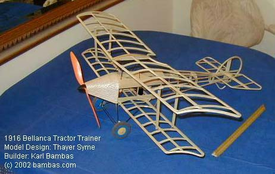

|
Karl writes...
I generally followed your plans with the exception that the nose cone is one piece 1/32nd sheet molded over 9 stringers, and the wheels are open cell foam which I glued to a 1/16 plywood disk and sanded to size in a Dremel tool. The floating axle bungee works great! The airframe, wheels, prop and two servos as shown in the photos weighs 102 grams. I'm estimating a 203 gram total flying weight. That's about 5 grams over your high-end weight. Maybe I can try a lithium battery to get some weight reduction. I'm planning on coverlite and glue stick, and haven't allowed for the weight of pilots or motor details.
These are photos of the completed 1916 Bellanca Tractor. I flew it for the first time September 23, 2002 in the #1 (Hindenburg) hangar at Lakehurst. Power system is two 520mah LiPoly cells and a GWS IPS-D motor driving a 12/8 prop cut down to 10 inches for ground clearance. The all up weight is 208 grams. I had five good flights of 3 minutes or so without a recharge, and there was still 10 minutes at full power after I got home before the Pixie 7 BEC cutoff motor power at 6.05 volts. It flew well. Not as much lateral stability as my GWS Tiger Moth but observably slower. I'm looking forward to a windless dry day to try it outdoors. Thanks for a good design. Thanks again for your help. PS - That's me and my wife in the cockpits. |
Return to
my original version | Other Versions Index
Copyright 2003, Thayer Syme. All rights reserved